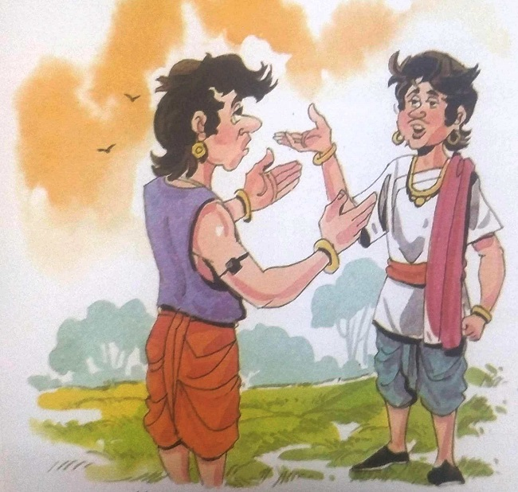

૨૩-યોગ્ય પતિ
મૃતદેહ લાવવા માટે રાજા વિક્રમાદિત્ય ઝાડ પાસે પહોંચ્યા. તેઓએ મૃતદેહને દૂર કર્યો અને
સ્મશાન તરફ ગયા. વેતાલાએ બીજી વાર્તા કહેવાનું શરૂ કર્યું – માધવી મહેન્દ્રગિરિના રાજાની એકમાત્ર
પુત્રી હતી. તે ખૂબ જ સુંદર હતી. રાજાએ તેને ખૂબ જ પ્રેમ અને પ્રેમથી ઉછેર્યો હતો. માધવીને સાહસનો
ઊંડો શોખ હતો. જ્યારે તેણી લગ્નની ઉંમરની હતી, ત્યારે તેણે જાહેરાત કરી, "હું એવા યુવક સાથે લગ્ન
કરીશ જે સૌથી સાહસિક અને ઉત્તેજક કાર્ય કરશે. પછી ભલે તે યુવક રાજકુમાર હોય કે સામાન્ય યુવાન."
રાજકુમારીની શરતો સાંભળીને, સમગ્ર રાજ્યમાંથી ઘણા યુવાનો પોતાનું નસીબ અજમાવવા
રાજધાનીમાં આવ્યા. એક યુવકે ઉંચી શિખર પરથી કૂદીને પ્રદર્શન કર્યું જ્યારે બીજા યુવકે દરિયામાં નાની
હોડીમાં મુસાફરી કરી. તેની હોડી સમુદ્રના મોજા સામે ટકી શકી નહીં અને ડૂબી ગઈ. પરંતુ તેણે અદ્ભુત
હિંમત દર્શાવી અને તરીને કિનારે પહોંચી ગયો. અન્ય યુવકે વાઘ સાથે કુસ્તી કરીને તેને મારી નાખ્યો.
એ જ રીતે ઘણા યુવાનોએ તેમની સાહસિક કૌશલ્ય પ્રદર્શિત કરી. પણ માધવીનું દિલ કોઈ જીતી
શક્યું નહીં. તેણીએ તેઓને કહ્યું, "તમે બધાએ શૌર્યપૂર્ણ કૃત્યો કર્યા, પરંતુ તેમાંથી કોઈ પણ
જાહેરમાં સારું નહોતું. તેથી જ તમને બધાને ઈનામ તરીકે સોનાના સિક્કા આપવામાં આવે છે." સોનાના સિક્કા
લઈને બધા યુવાનો દુઃખી હૃદયે પાછા ફર્યા.
એક દિવસ એક રાક્ષસ રાજ્યમાં પ્રવેશ્યો. તે ગયો અને રાજ્યમાં સ્થિત એક ટેકરી પર બેઠો અને
ત્યાંથી પસાર થતી બે વ્યક્તિઓને પકડી લીધી. તેણે તેઓને કહ્યું, "હું માંસ ખાતો નથી. તેથી, તમારા
બેમાંથી એક ગામમાં જઈને મને પુષ્કળ ખોરાક લાવશે અને બીજો મારી સાથે બંદીવાન રહેશે. જો તે ખોરાક લઈને
પાછો નહીં આવે, તો હું તેને મારી નાખીશ. અન્ય સાથી."
એક વ્યક્તિને રાક્ષસએ પકડી લીધો અને બીજો ડરીને નજીકના ગામમાં ભાગી ગયો. તેણે ગામલોકોને
રાક્ષસ અને તેની સ્થિતિ વિશે જણાવ્યું. ટૂંક સમયમાં જ ગ્રામજનોએ બળદ ગાડામાં ખાદ્ય સામગ્રી મૂકી.
તે બળદગાડી લઈને રાક્ષસ પાસે પહોંચ્યો. રાક્ષસે ભરપૂર ભોજન ખાધું અને
ખુશ થઈને
બંદીવાનને છોડાવ્યો. પછી તેણે તેઓને કહ્યું, "તમે લોકો જાઓ અને રાજાને મારો સંદેશો
આપો કે તે દરરોજ
મારા માટે ખોરાકથી ભરેલી બળદગાડી મોકલે. જો તે આમ ન કરે તો પછી હું આખા રાજ્યનો નાશ
કરી દઈશ."
તેણે
રાજાને રાક્ષસનો સંદેશ સંભળાવ્યો. આ સાંભળીને રાજા ચિંતિત થઈ ગયો. તેણે રાક્ષસને
મારવા માટે સેના
મોકલવાનું નક્કી કર્યું. પણ માધવીએ તેને રોક્યો અને કહ્યું, "પિતા! ન કરો. તે કરો.
રાક્ષસ માંસ ખાતો
નથી, તે ખૂબ જ આશ્ચર્યની વાત છે. તમે મારા લગ્ન માટે એક શરત રાખો કે હું તેની સાથે
લગ્ન કરીશ જે
રાક્ષસનું રહસ્ય શોધી શકે અને આ સમસ્યામાંથી છુટકારો મેળવે."
|
|
રાજાએ માધવીની સલાહ સ્વીકારી અને તરત જ
રાજ્યમાં તેની જાહેરાત કરી. રાજ્યના ઘણા યુવાનોએ આ પડકાર સ્વીકાર્યો. તે બધા એક સાથે રાક્ષસ પાસે
ગયા અને તેની પાસે તેનું સત્ય પૂછ્યું. રાક્ષસે કહ્યું, “હું ખરેખર ગાંધર્વ છું. એક શ્રાપને કારણે
હું રાક્ષસ બની ગયો છું. કોઈ મારા માટે મોટું સાહસ કરશે તો જ હું આ શ્રાપમાંથી મુક્ત થઈશ.
મહેન્દ્રગિરિની ઉત્તર બાજુએ વિષ્ણુ મંદિર છે. મંદિરની અંદર એક ટનલ છે. ઝેરીલા સાપ અને વીંછી છે.
ટનલના છેડે એક ખાડો છે જેની આસપાસ આગ સળગી રહી છે. જે કોઈ એ ખાડામાં કૂદશે તે પાતાળલોક સુધી
પહોંચશે.
એક વિશાળ અજગરના પેટમાં હીરાની વીંટી છે. જો હું તે વીંટી મેળવીશ અને મારી આંગળીમાં પહેરીશ, તો હું
શ્રાપમાંથી મુક્ત થઈશ અને મારા સાચા સ્વરૂપમાં પાછો આવીશ."
ઘણા રાજકુમારો જેઓ રાજકુમારી સાથે લગ્ન કરવા માંગતા હતા તેઓ સુરંગ પર પહોંચી ગયા પરંતુ
ત્યાંથી આવતા સાપનો અવાજ સાંભળીને તેઓ અંદર જવાની હિંમત ન કરી શક્યા અને નિરાશ થઈને પાછા ફર્યા.
તેમાંથી જયકાંત નામનો યુવક ગમે તે ભોગે રાજકુમારી સાથે લગ્ન કરવા મક્કમ હતો. તે પાછો
ગયો નહિ. તેણે વિચાર્યું કે જો તે રાક્ષસે તેને કહ્યું તેમ કર્યું, તો તે મરી પણ શકે છે. તે સુરંગની
અંદર જવાની હિંમત ન કરી શક્યો અને પછી તેણે તંત્ર-મંત્રની મદદ લેવાનું નક્કી કર્યું. તે એક જાણીતા
તાંત્રિક પાસે ગયો અને તેને આખી વાત કહી અને મદદ માંગી.
|
|
તાંત્રિકે તેને એક કાળું તાવીજ આપ્યું અને કહ્યું, "જો આ તાવીજ કોઈના
હાથ પર બાંધવાથી લીલું થઈ જાય, તો તે તેને ત્રણ જોખમોથી બચાવશે. તમે તેને તમારા હાથ
પર બાંધો. જો તેનો રંગ બદલાશે નહીં તો તે તેને કોઈનાથી બચાવશે. બીજાનું." તેને હાથ
પર બાંધવું. ફક્ત તે જ આ મુશ્કેલ કાર્ય કરી શકે છે જેના હાથ પર આ તાવીજ તેનો રંગ
બદલે છે."
જયકાંતે તરત જ એ તાવીજ લઈ લીધું અને હાથ પર બાંધી દીધું. પરંતુ તેનો
રંગ બદલાયો ન હતો. પછી તેણે એક એવી વ્યક્તિને શોધવાનું નક્કી કર્યું જે તેના હાથમાં
તાવીજનો રંગ બદલી શકે અને તે તેની મદદ કરી શકે. તેણે ઘણી જગ્યાએ જઈને ઘણા યુવકોના
હાથ પર તાવીજ બાંધ્યા, પરંતુ તાવીજનો રંગ બદલાયો નહીં. આખરે તેની શોધ એક ગામમાં
પૂરી થઈ. ત્યાં જ્યારે તેણે સત્યવાન નામના યુવકના હાથ પર તાવીજ બાંધ્યું તો તેનો
રંગ બદલાઈને લીલો થઈ ગયો. આ જોઈ જયકાંત આનંદથી ઉછળી પડ્યો.
|
સત્યવાન એક શિક્ષિત
બેરોજગાર યુવક હતો. તે પોતાના પરિવારનું ભરણ પોષણ કરવા માટે સખત મહેનત કરતો હતો
જેથી તેઓને ક્યાંક ખાવાનું મળી રહે. પરંતુ તેણે ક્યારેય કોઈ સાહસિક કામ કર્યું ન
હતું. કોઈપણ સાહસિક કાર્યને બાજુ પર રાખો, તેણે ક્યારેય માખી પણ મારી ન હતી. તે
કાયર હતો. જો કોઈ તેને પડકારે તો તે ત્યાંથી ભાગી જતો.
જયકાંતે સત્યવાનને તેની પુત્રવધૂને રાક્ષસ અને તેના શ્રાપથી મુક્ત કરવામાં મદદ કરવા
કહ્યું.
"ના, ના. હું સાપ, અગ્નિ અને અજગરનો સામનો કરી શકતો નથી. મને માફ કરજો.
હું તમને મદદ કરી શકતો નથી," સત્યવાને ભયભીત સ્વરમાં કહ્યું કહ્યું અને ત્યાંથી
જવાનું શરૂ કર્યું.
જયકાંતે સત્યવાનને રોક્યો અને કહ્યું, "આ કામ કરવા બદલ રાજા પાસેથી જે
ઈનામ મળે છે તે તમે રાખજો. તમારી ગરીબી દૂર થઈ જશે." પણ સત્યવાને તેની વાત ન
સાંભળી. તેણે જયકાંતને કહ્યું, "જો તું મારી વાત નહિ સાંભળે તો હું રાજાને કહી આવીશ
અને તે તને સજા કરશે.
|
|
અંતે સત્યવાન સંમત થયો. તે ટનલમાં પ્રવેશ્યો. પરંતુ તાવીજ હોવાને કારણે
સાપ અને વીંછીએ તેને કોઈ નુકસાન પહોંચાડ્યું ન હતું. તે આગની મધ્યમાં સ્થિત
ખાડામાંથી ટનલમાંથી નીચે ઉતર્યો અને અજગરના મોંમાં અંદર જઈને તેના પેટમાંથી વીંટી
કાઢી. તે એકદમ ઠીક હતો. તેણે સુરંગમાંથી બહાર આવીને જયકાંતને વીંટી આપી. વીંટી
મળતાં જ જયકાંત ખુશ થઈ ગયો. જયકાંતે કહ્યું, "તમારો ખૂબ ખૂબ આભાર! હવે આપણે રાક્ષસ
પાસે જઈએ અને તેને વીંટી આપીને શ્રાપમાંથી મુક્ત કરીએ." સત્યવાને કહ્યું, "તમે
રાક્ષસ પાસે જાઓ. મને માફ કરો!" આટલું કહી તે ત્યાંથી ભાગી ગયો હતો.
જયકાંત ત્યાંથી સીધો મહેલમાં ગયો. તે રાજકુમારીને મળ્યો અને તેને વીંટી
આપીને કહ્યું, "મેં આ વીંટી ઘણી મુશ્કેલીઓનો સામનો કરીને મેળવી છે. તમે તેને
રાક્ષસને સોંપી દો, જેથી તે શ્રાપમાંથી મુક્ત થઈ શકે."
માધવી જયકાંતની હિંમતથી ખૂબ પ્રભાવિત થઈ. તે તેના પિતા અને જયકાંત સાથે
રાક્ષસને મળવા ગઈ. તેણે રાક્ષસને વીંટી આપી. રાક્ષસે વીંટી પહેરી લીધી અને બીજી જ
ક્ષણે તે એક સુંદર યુવાનમાં પરિવર્તિત થઈ ગયો. તેણે કહ્યું, "તમે મને શ્રાપમાંથી
મુક્ત કર્યો, બદલામાં હું તમને તમારા માટે યોગ્ય વર પસંદ કરવામાં મદદ કરીશ. તમે
લગ્ન માટે અરજદારને બીજી ચૂનોતી આપો- અહીં એક ઊંડો કૂવો છે. તેની અંદર કિંમતી રત્ન
જડેલી બંગડીઓ પડી હતી. જે તમારી સાથે લગ્ન કરવા માંગે છે તે બંગડીઓ લાવવી જોઈએ. પણ
એ કૂવામાં ત્રણ ભૂત છે. તેમની સાથે લડાઈ કર્યા વિના એ બંગડીઓ કોઈ નહીં લાવી
શકે." આટલું કહીને તે ગાયબ થઈ ગયો.
|

|
ગાંધર્વની વાત સાંભળીને માધવી જયકાંત તરફ વળી.
તેણે કહ્યું, "તમે પહેલાં પણ હિંમતભર્યું કામ કર્યું છે. મને વિશ્વાસ છે કે તમે પણ
આ કામ કરી શકશો. જો તું એ બંગડીઓ લાવીશ તો હું તારી સાથે લગ્ન કરીશ.
જયકાંત તૈયાર થયો. તેણે રાજકુમારી પાસેથી રજા લીધી. તે સીધો સત્યવાન પાસે ગયો.
તેણીએ
સત્યવાનને રત્નજડિત બંગડીઓ વિશે જણાવ્યું અને તેને કૂવામાંથી બહાર લાવવા કહ્યું.
'કુવામાં બંગડીઓ સિવાય બીજું કંઈ છે?' સત્યવાને પૂછ્યું.'ના, નહીં તો... ત્યાં
બીજું
કંઈ નથી,” જયકાંતે ભૂતનું અસ્તિત્વ છુપાવતા કહ્યું.
"એવું જ હોય તો તું જાતે કૂવા પર કેમ નથી જતો?" સત્યવાને કહ્યું. "ખરેખર
ગાંધર્વે
કહ્યું છે કે જે વ્યક્તિ વીંટી લાવ્યો છે તે જ બંગડીઓ જોઈ શકે છે," જયકાંતે તેને ખાતરી આપતા
કહ્યું.
સત્યવાન જયકાંતના શબ્દોમાં માનીને કૂવામાં જવા તૈયાર થયો. તે કૂવામાં ઉતર્યો.
ત્યાં કોઈ ભૂત દેખાતું
ન હતું. તેણે કૂવાના તળિયે ચમકતી બંગડીઓ ઉપાડી અને કૂવામાંથી બહાર આવ્યો.
|
કૂવામાંથી બહાર આવીને તેણે જયકાંતને બંગડીઓ આપી. જયકાંતની ખુશી કાબૂ બહાર હતી. તેણે
આનંદથી બૂમ પાડી, "વાહ, સત્યવાન! તેં મારી વાત માનીને અશક્યને શક્ય બનાવ્યું. મને શંકા હતી કે તું
સુરંગમાંથી સલામત રીતે બહાર આવીશ, પણ તું વીંટી લઈ આવ્યો. અને તું કૂવાની અંદર ગયો પછી, મને એવું
લાગ્યું. ભૂત તને મારી નાખવાના હતા પણ તું બંગડીઓ લઈને સલામત બહાર આવી ગયો. તારા કારણે..."
તે કંઈક બીજું બોલવા જતો હતો ત્યાં જ રાજકુમારી માધવી તેના પિતા અને કેટલાક સૈનિકો સાથે
તેની સામે ઉભી હતી. તેણીએ ગુસ્સામાં જયકાંતને કહ્યું, "જયકાંત! ગાંધર્વે બીજી ચેલેન્જ આપવાનું
કહ્યું ત્યારે મને થોડી શંકા હતી. પણ હવે મારી શંકા વાસ્તવિકતામાં ફેરવાઈ ગઈ છે. તમે જૂઠું બોલ્યા.
તમે છેતરપિંડી કરી. હું એક હિંમતવાન વ્યક્તિ છું. હું એક વ્યક્તિ સાથે લગ્ન કરવા માંગતી હતી, અને તે
વ્યક્તિ સત્યવાન છે. હું સત્યવાન સાથે લગ્ન કરવા જઈ રહ્યો છું." જયકાંત માથું નમાવીને ઊભો રહ્યો.
તેનો ચહેરો પડી ગયો હતો.
વેતાલાએ વાર્તાનો અંત અહીં કહીને કર્યો, “રાજા, તે જયકાંત હતો જેણે વીંટી મેળવવા માટે
બધું જ કર્યું. તે એક તાંત્રિક પાસે ગયો અને તાવીજ મેળવ્યો અને પછી તાવીજ પહેરવા લાયક વ્યક્તિની શોધ
કરી. ડરપોક સત્યવાનમાં હિંમત ભેગી કરી. આમ તેના પ્રયત્નોથી રાજ્ય બચી ગયું.આટલું બધું હોવા છતાં
રાજકુમારીએ તેને ઠપકો આપ્યો અને તેની સાથે લગ્ન કરવાની ના પાડી.શું આ ખોટું ન હતું?તેણે જયકાંતને
બદલે સત્યવાનને પસંદ કર્યો.પસંદ કર્યો,શું તે યોગ્ય છે?જો તમે મારા પ્રશ્નોના જવાબ ન આપો તો તમારું
માથું ટુકડા કરી નાખવામાં આવશે."
રાજા વિક્રમાદિત્યએ તરત જ કોઈ પણ વિલંબ કર્યા વિના કહ્યું, '"હિંમતવાન વ્યક્તિ એ છે જે
સત્યનો સામનો કરવાની હિંમત ધરાવે છે. જયકાંતે સત્ય છુપાવીને બીજાના પ્રયાસનો ફાયદો ઉઠાવવાનો પ્રયાસ
કર્યો. આ સાબિત કરે છે કે તે કાયર હતો. બીજી તરફ, સત્યવાન ડરપોક હતો, પરંતુ જયકાંત દ્વારા
સમજાવવામાં આવતાં તે રાજી થયો અને હિંમતથી કામ કર્યું. તેથી માધવીની નજરમાં તે જ અસલી હીરો હતો.
રાજકુમારીનો નિર્ણય સાચો હતો."
"વાહ, વિક્રમ તેં તર્ક સાથે સચોટ જવાબ આપ્યો. હું તારા જવાબથી ખુશ છું. પણ હવે હું
અહીંથી જાઉં છું કારણ કે તેં તારું મૌન તોડ્યું છે." આટલું કહીને વેતાલા ઊડી ગયો અને પાછો એ જ ઝાડ
પર લટકી ગયો.
|